This project forecasts Medicaid expenditures for Michigan and the United States using annual data from 2013 to 2025, then generates 10-year projections for 2026 to 2035 with 95 percent confidence intervals.
| Requirement | Status | Evidence |
|---|---|---|
| Generate a 10-year projection table with point estimates and 95 percent confidence intervals | Completed | `tables/final_projection_with_intervals.csv` and `tables/final_projection_with_intervals.html` |
| Plot historical vs. projected expenditures | Completed | Final projection plots for Michigan and the United States are included below |
| Export results to HTML | Completed | This packaged report plus HTML table exports are included in this folder |
| Export results to PDF | Completed | `medicaid_expenditure_projection_report.pdf` is generated in this folder |
| Optional interactive dashboard using Plotly or Streamlit | Optional and not required | Not included |
Best model: Prophet
Holdout MAPE: 6.71%
Projected 2026 spending: $28.87B
Projected 2035 spending: $44.25B
Best model: Prophet
Holdout MAPE: 0.64%
Projected 2026 spending: $1099.60B
Projected 2035 spending: $1736.05B
The project includes a full 10-year confidence-interval forecast for both Michigan and the United States. The forecast horizon runs from 2026 through 2035.
| Geography | Year | Forecast (Billions) | Lower 95% Bound | Upper 95% Bound |
|---|---|---|---|---|
| Michigan | 2026 | 28.87 | 28.06 | 29.65 |
| Michigan | 2027 | 30.58 | 28.65 | 32.38 |
| Michigan | 2028 | 32.29 | 28.79 | 35.86 |
| Michigan | 2029 | 34.00 | 29.15 | 39.62 |
| Michigan | 2030 | 35.71 | 29.04 | 43.28 |
| Michigan | 2031 | 37.42 | 28.99 | 47.58 |
| Michigan | 2032 | 39.13 | 28.79 | 51.40 |
| Michigan | 2033 | 40.84 | 28.29 | 55.67 |
| Michigan | 2034 | 42.54 | 27.82 | 60.07 |
| Michigan | 2035 | 44.25 | 26.15 | 65.00 |
| United States | 2026 | 1099.60 | 1074.93 | 1125.31 |
| United States | 2027 | 1170.28 | 1117.23 | 1236.57 |
| United States | 2028 | 1241.14 | 1151.21 | 1355.00 |
| United States | 2029 | 1311.82 | 1166.59 | 1472.89 |
| United States | 2030 | 1382.49 | 1185.15 | 1591.69 |
| United States | 2031 | 1453.17 | 1198.28 | 1718.69 |
| United States | 2032 | 1524.03 | 1210.56 | 1850.06 |
| United States | 2033 | 1594.71 | 1221.95 | 1977.00 |
| United States | 2034 | 1665.38 | 1211.96 | 2125.83 |
| United States | 2035 | 1736.05 | 1194.91 | 2298.22 |
| Geography | Model | Model Family | Holdout MAPE |
|---|---|---|---|
| Michigan | Linear Regression | Baseline | 7.12% |
| Michigan | Polynomial Regression (Degree 2) | Baseline | 9.38% |
| United States | Linear Regression | Baseline | 11.64% |
| United States | Polynomial Regression (Degree 2) | Baseline | 4.89% |
| Michigan | ARIMA | Time Series | 7.20% |
| Michigan | Holt-Winters | Time Series | 7.81% |
| Michigan | Prophet | Time Series | 6.71% |
| United States | ARIMA | Time Series | 3.40% |
| United States | Holt-Winters | Time Series | 2.74% |
| United States | Prophet | Time Series | 0.64% |
Historical values plus 2026-2035 forecast with 95 percent interval.
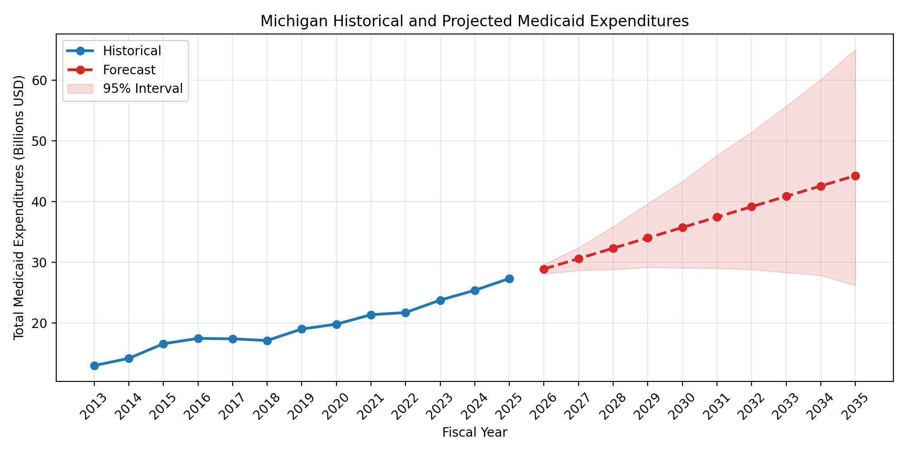
Historical values plus 2026-2035 forecast with 95 percent interval.
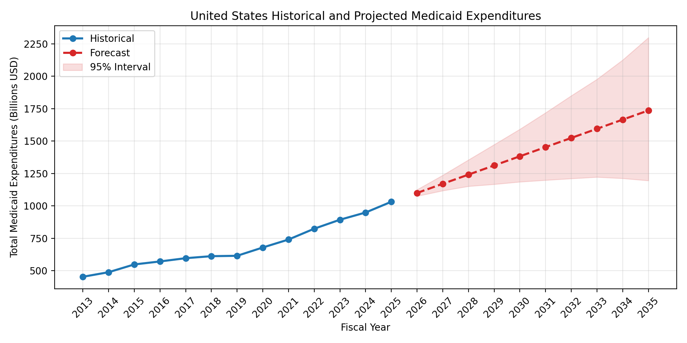
Observed Michigan Medicaid expenditures across the historical window.
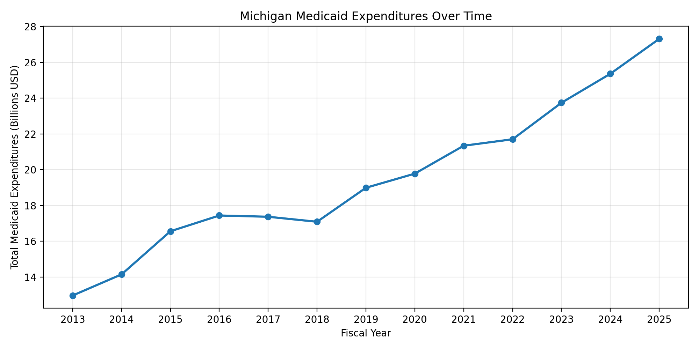
Observed United States Medicaid expenditures across the historical window.
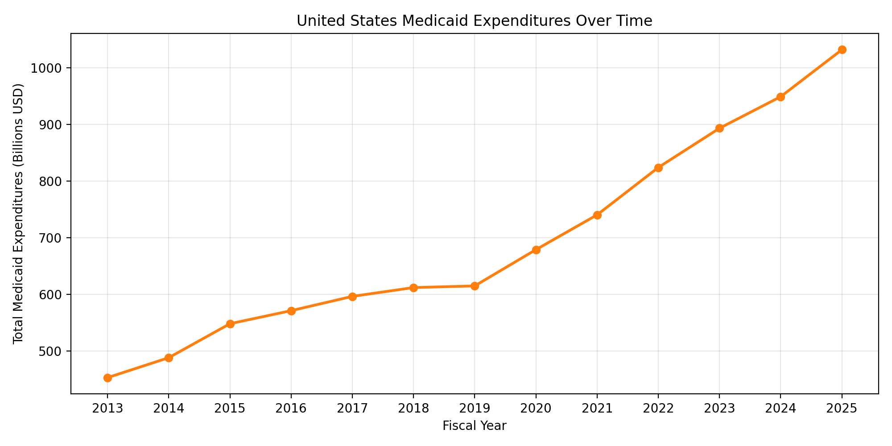
Year-over-year growth in Michigan Medicaid expenditures.
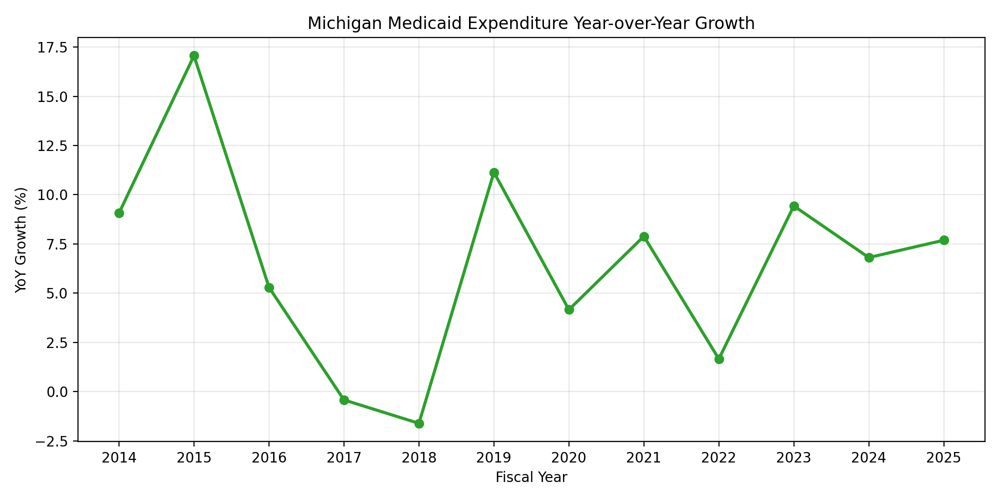
Year-over-year growth in United States Medicaid expenditures.
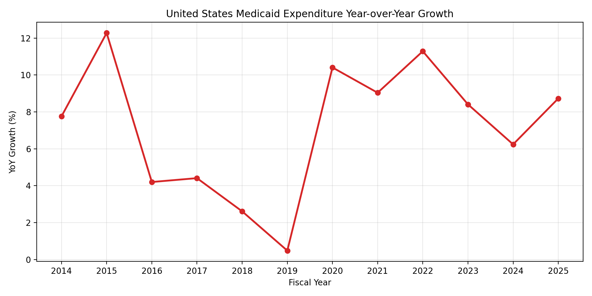
Comparison of annual growth rates between Michigan and the United States.
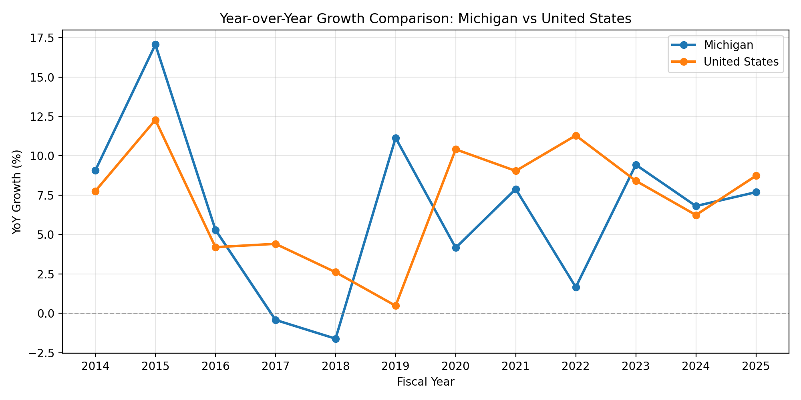
Trend and residual view used to assess structural movement in annual data.
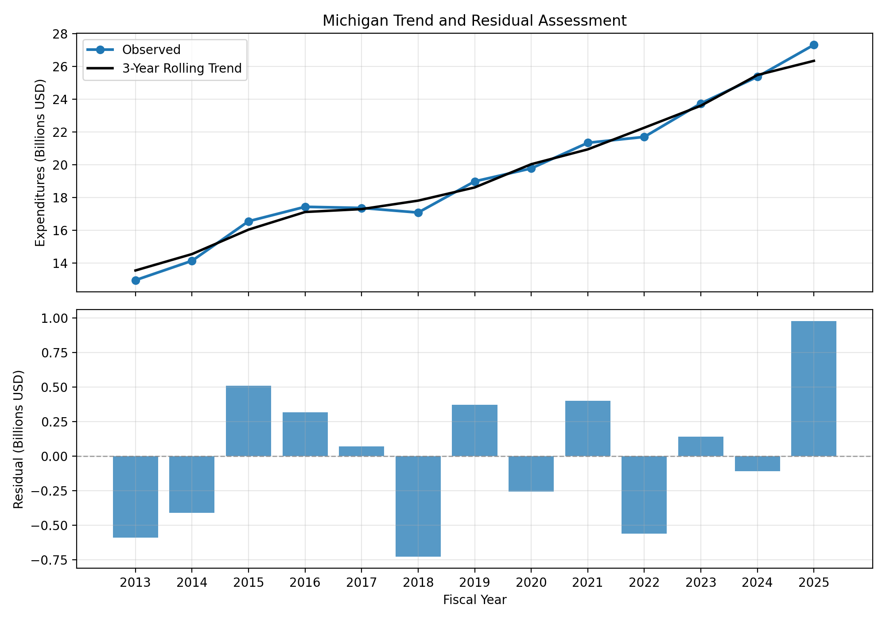
Trend and residual view used to assess structural movement in annual data.
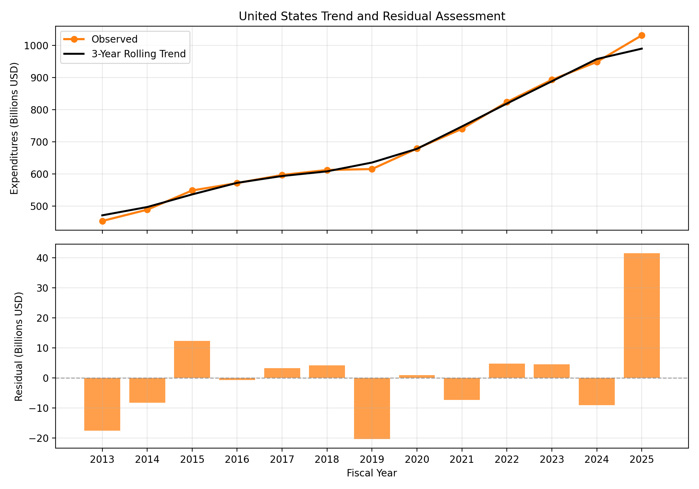
Holdout comparison for the linear regression baseline.
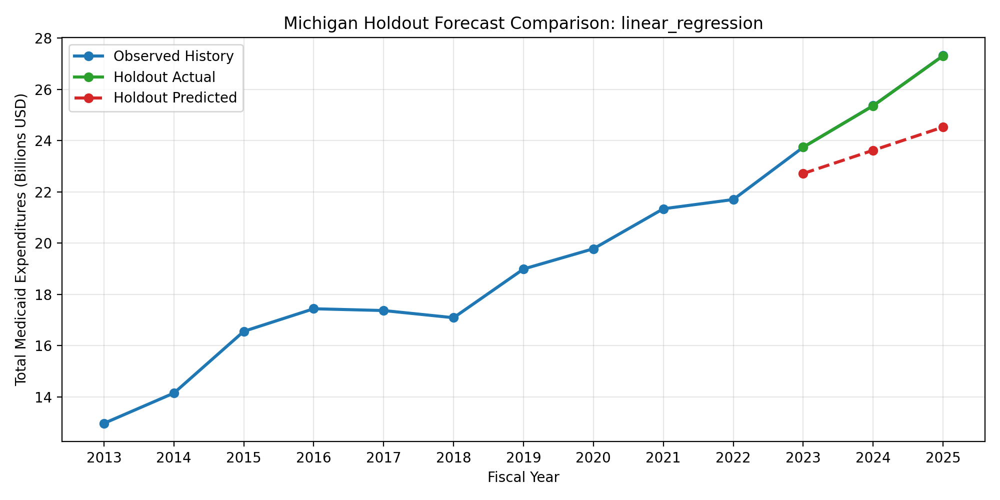
Holdout comparison for the second-degree polynomial baseline.
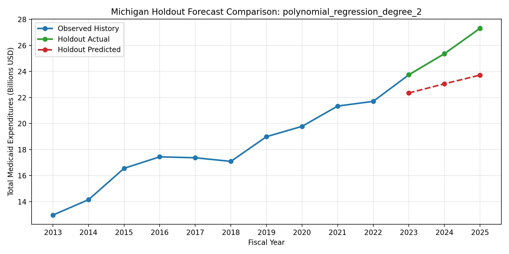
Holdout comparison for the linear regression baseline.
Holdout comparison for the second-degree polynomial baseline.
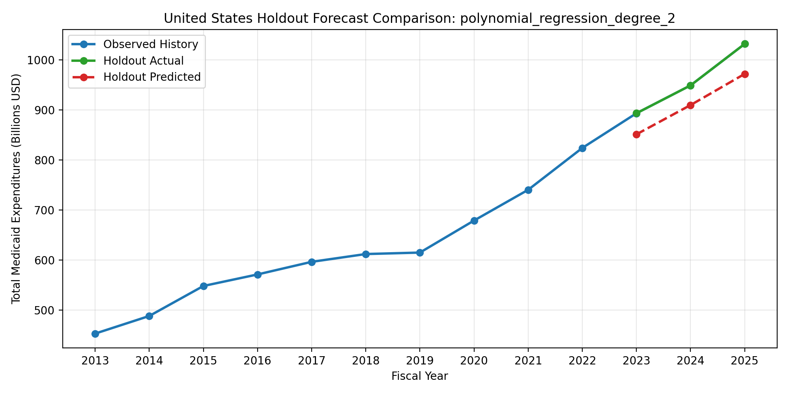
Holdout comparison for the ARIMA model.
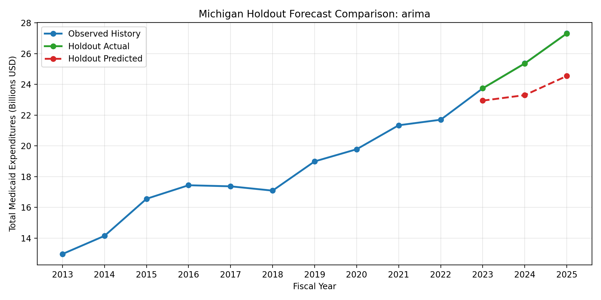
Holdout comparison for the Holt-Winters model.
Holdout comparison for the Prophet model.
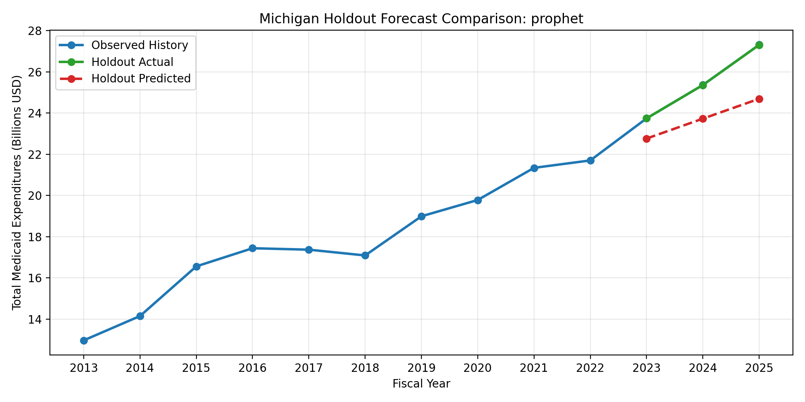
Holdout comparison for the ARIMA model.
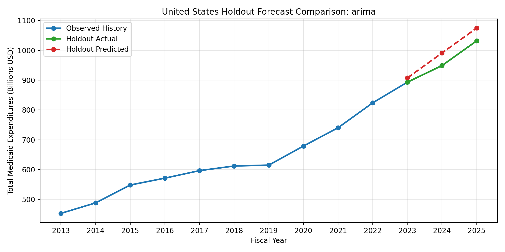
Holdout comparison for the Holt-Winters model.
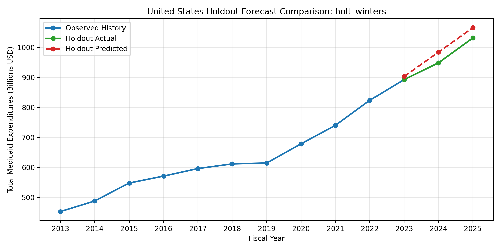
Holdout comparison for the Prophet model.
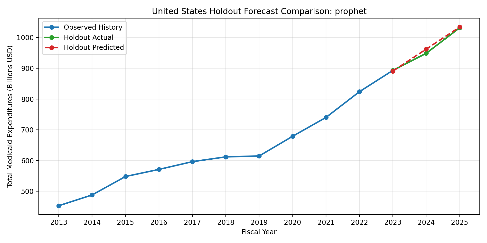
Lower MAPE indicates better holdout performance.
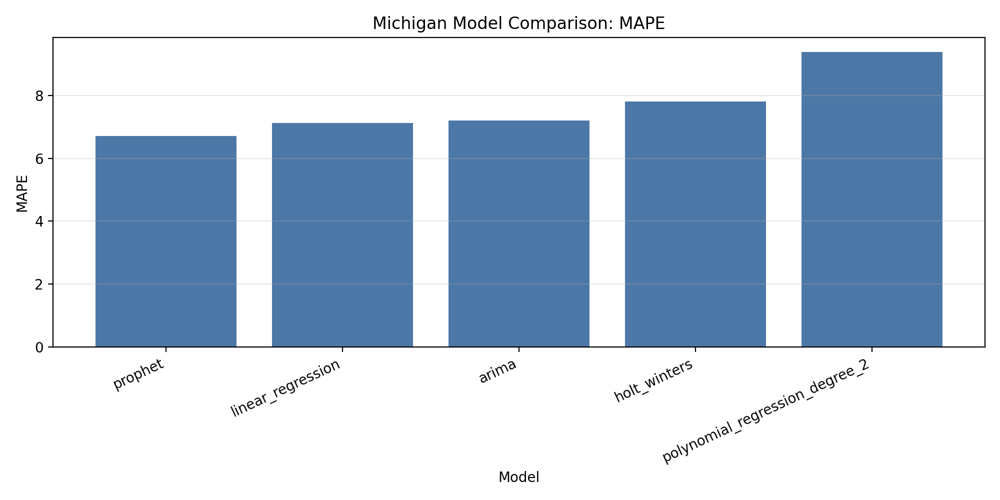
Lower MAPE indicates better holdout performance.
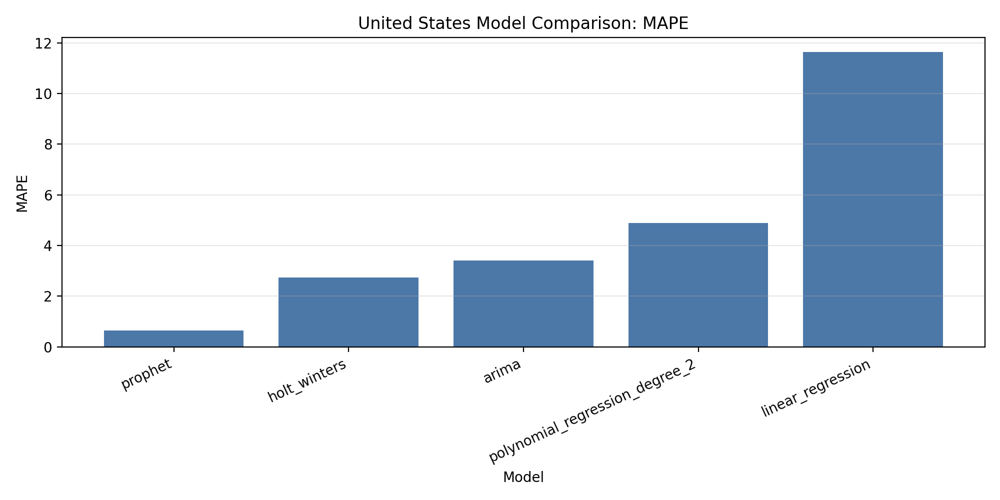